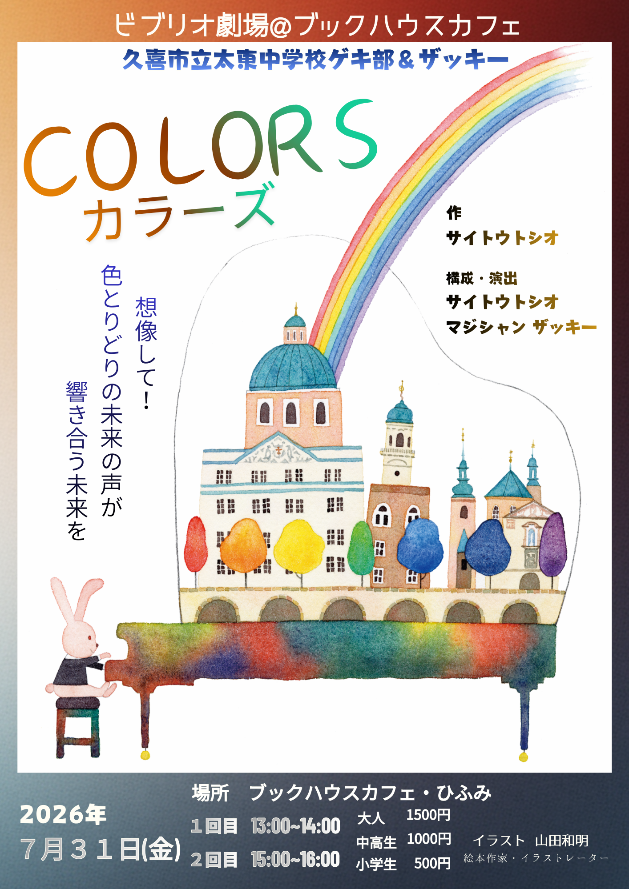

ビブリオ劇場・ビブリオドラマ(本のあるところで上演される、本に関するドラマ)
SHO-GEKIとは？ 作品集「バタフライ」収録 架空インタビューに加筆
―― 単刀直入に質問させていただきます。SHO-GEKIとはいったいなんですか？
斉藤 SHO-GEKIはショウゲキと読みます。
この本のタイトルにもなっている『バタフライ』もSHO-GEKIの一つです。
SHO-GEKIには、四つの意味が含まれています。
―― 一つ目の意味はなんですか？
斉藤 小さい劇という意味の「小劇」です。一つ一つのパートは三分～五分の短い劇、つまり「小劇」です。
そして、それが集まった全体も「十分～二十分程度の短い劇」＝「小劇」なんです。
―― SHO-GEKIの二つ目の意味はなんですか？
斉藤 歌やダンス、パントマイムなどのShowで創られる劇という意味の「Show劇」です。英語でパフォーミングアーツと呼ばれている表現活動を使った劇です。
―― ミュージカルのように、劇の中に歌やダンスを組み込むんですか？
斉藤 そうしてもいいんですが、それはハードルが高すぎます。私達は歌とダンスを独立したパートとしてSHO-GEKIの中に組み込んでいます。
そうすることで、毎日の練習に組み込んでいる歌とダンスの取り組みを、そのまま発表に使えます。発表が目的となることで、練習に活気が生まれます。
―― 歌はどんな形で発表するのですか。
斉藤 ただ歌うだけだと味気ないので、ソロからデュエット、そして全員参加の合唱と変化をつけています。
現在は、『ふるさと』『夏の思い出』『翼をください』『イマジン』『花は咲く』『いのちの歌』『やさしさに包まれたなら』『いつも何度でも』『アンパンマンのマーチ』など多数の持ち歌があります。
半年に一度は新しい歌に取り組むようにしています。アカペラで歌うことも多いです。SHO-GEKIの発表場所である公民館や集会場にはピアノがないんです。
でも、アカペラの合唱ならどこでも発表できます。
―― なるほど。
斉藤 合唱を取り入れる最大のメリットは、全員が発表に参加できることです。運動部とは違う演劇部の魅力として私が大切にしているのは、全員がレギュラーになれることです。演劇部には控え選手は必要ありません。歌を取り入れることで、どんなに人数が多くても全員が舞台で発表できます。これってクールじゃないですか。
―― でも、照明などのスタッフも大切ですよね。
斉藤 もちろん大切です。でも、私達が発表する小学校のステージや公民館の照明は、蛍光灯だけなんです。照明は交代で担当すればなんとでもなります。
―― ダンスはどんな感じのものをやるんですか。
斉藤 ジャズダンス、クラシックバレエ、ヒップホップに新体操や器械体操の技を加えた創作ダンスを披露しています。振りを全部コピーすることは禁じ手です。
今は、日本中のたくさんの生徒がダンスを習っています。けれど、そんな生徒の受け皿となる部活は多くはありません。演劇部が取り組みにダンスを加えることで、ダンスをやりたい生徒の受け皿になれます。
演劇部は部員を増やせる、ダンスが好きな生徒は部活でやりたいことができる。
これって、ウィン・ウィンですよね。
―― SHO-GEKIの三つ目の意味はなんですか？
斉藤 観客に笑ってもらうことを目的に創られた劇・「笑劇」です。
今回は紹介した七作品は、すべて「笑劇」の要素を含んでいます。
私達の学校では、なるべくたくさんの部員が出られるコント形式を採用しています。
プロのネタを使うことは御法度です。
私は、創作に挑戦したい演劇部顧問や生徒のみなさんに、笑劇創りをお勧めしたいのです。
―― どうしてですか？
斉藤 創作に挑戦するということは、とっても素晴らしいことだと思います。しかし、創作デビューが三十分以上の劇というのは、ハードルが高すぎると思うんです。M1グランプリを参考にして、まずは、２分から４分程度のコント創りから始めて、そこで腕を磨いてから長い劇に取り組んではいかがでしょう。
大劇作家の井上ひさしさんもコントの創作で腕を磨いた後に、素晴らしい戯曲の数々を生み出しました。
―― SHO-GEKIの四番目の意味は何ですか。
斉藤 なんらかの「衝撃」がある劇です。それって、不可能なことではないと思うんです。
―― そんな体験があるんですか？
斉藤 私達が、誰かに衝撃を与えることができたかどうかはわかりません。けれど、私達自身が、逆に感動という衝撃を与えられたことは何度もあります。
―― 具体的に教えていただけますか？
斉藤 病院のクリスマス会での上演の後に届いた感謝の手紙を読んで、うれしい気持ちから、みんなで大泣きしたことがありました。
感動を届けようとした自分達が、逆に感動で泣いてしまう。これってめちゃめちゃクールじゃないですか。
―― 部活動改革によって生まれ変わろうとしている部活にふさわしい、新しいクールかもしれませんね。最後に、一言お願いします。
斉藤 私達はSHO-GEKIを含めた自分達が取り組んでいる劇を「田舎のネズミの劇」と呼んでいます。卑下してそう呼んでいるのではありません。胸をはってそう呼んでいるんです。
中学生の劇は、照明や音響をふんだんに使えるような「都会のネズミの劇」とは違います。でも、「田舎のネズミの劇」は「都会のネズミの劇」より劣るものでは決してありません。
私は「田舎のネズミの劇」が宝石よりも美しく輝く瞬間に、今まで何度も立ち会ってきました。
そこには勝ち負けとか賞が生み出すクールとは全く違った種類のクールが存在するんです。
みなさん、私達と一緒に、SHO-GEKIで新しいクールを生み出しませんか。そして、それを広めていきませんか。
ビブリオドラマ最新作 「カラーズ」

久喜市立中央図書館上演
ビブリオドラマ「ラビリンス」  ブリオドラマ「ラビリンス」
ブリオドラマ「ラビリンス」
ブックハウスカフェ上演
ビブリオドラマ「カンパネラ」